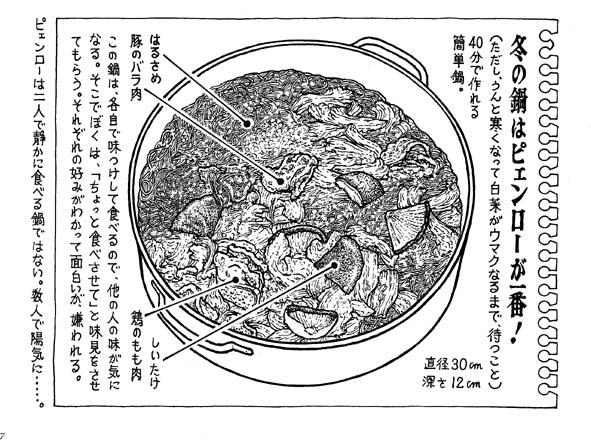
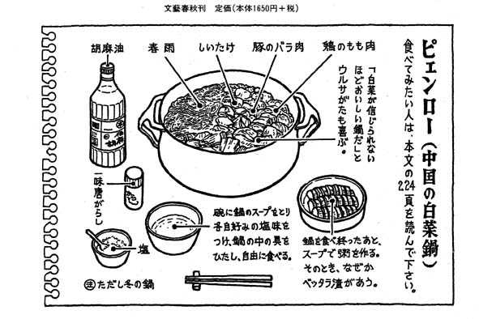

文芸春秋 妹尾河童 著 河童のスケッチブック １６５０円より抜粋
|  扁炉(ピェンロー) 冬になると、何人もの友人たちから、 「寒くなりましたね」 と電話がかかってくる。日ごろ季節の挨拶などするはずのない奴が、 わざわざ電話をかけてくるのだから、その魂胆はすぐにバレる。 それは我が家の「ピェンロー」と呼ぶ鍋料理を食べさせろ、とさいそく いう催促である。この前の冬も、一週間に客が入れ替わり立ち替 わりで、なんと三回も作らされたことがあった。でも飽きないか ら不思議だ。我が家に出入りしている連中の人気投票では、この 鍋は常に第一位で、その座を三十数年間も守りつづけている。 この「扁炉(ピェンロー)」なる鍋料理は中国料理ではあるが、 レストランのメニューには載っていない。ぽくに教えてくれたの は、中国大陸に永く住んでいた人で、これは広西省の田舎料理だ といっていた。 「扁」とは「ささやかな」とか「素朴な」という意味だそうだ。 文字どおり中国の"素朴な白菜鍋〃だ。味つけは"粗塩〃"胡麻 油〃"一味唐辛子〃だけなのだが、「ピェンロー」と聞いただけで 常連が群がってくる絶妙の味になる。 明日も食いしん坊が集まってくることになっている。ちなみに 面々の職業は、作家、編集者、演劇関係者、料理人などと様々。 「えっ、雑誌の取材なの。でもいいや、写真を撮られるぐらいは 我慢する」といっていた。 この鍋のいいところは、「えいやっ!」と大ざっぱに作っても 間違いなく美味しいこと。 客がやってくる一時間前から作りはじめても、悠々と間に合う ほど簡単なのである。だから友人を招くことが苦にならない。 まず五人前の材料。 ○白菜-株。(5センチにザク切りし、根っこに近い白い部分と グリーンの部分を分けておく) ○干し椎茸50グラム。(水に浸してもどしておく。もどした水は ダシが出ているから捨てるのはモッタイナイ。当然これは使う) ○豚肉500グラム。(バラ肉の薄切りを食べやすい大きさに切る。 ロース肉でないほうがいい。一人分100グラム見当) ○鶏肉500グラム。(モモ肉を一口大に切る。、一人分100グラム見当。 脂肪分を気にしない若い人には手羽先でも結構。ササミは味が 出ないからダメ) ○春雨-袋。(水にもどし、鋏で適当な長さにカット。中国産のりゆうこう 山東省龍口の「緑豆春雨」がいい。溶けてドロドロにならない上 等品。手にはいらなければ、ビーフンで我慢してもいい) ○胡麻油(精製した極上品より、普通の胡麻油。色がついていて香りの 強いもののほうが適当である) ○調味用の粗塩。(精製した卓上塩でないほうがいい) ○一味唐辛子粉、少々。 さて作り方だが、大きい鍋に白菜の白い部分を放り込み、タッ プリ水を注ぐ。そのとき椎茸をもどした水も忘れずに使う。 沸騰してきたら、豚肉、鶏肉、椎茸を全部ぶち込み、胡麻油を 大匙4杯ほどタラタラ。 材料を鍋に入れる順序や火加減などに気をつかう必要はまった くない。しばらく煮て、途中で取り分けて残しておいた白菜の青 い葉っぱの部分を追加する。時差をつけて入れると、先に放り込 んだ白い部分と同じ柔らかさになる。 この鍋は、日本料理の白菜鍋と違って、白菜がクタクタになる ほど煮たほうが美味しい。煮る目安は四十分。ただ煮るだけ。 だから招いた客が早くやってきても、お喋りをしていればいい。 最後に春雨を入れる。春雨は煮すぎないこと。 べる直前に、もう一度胡麻油をタラタラと"の"の字を書く ようにタップリと垂らす。これでピェンローは出来上がり。 という具合に作り方は簡単だが、作り方よりも食べ方が大事。 鍋の中は味つけをしていないから、食べる本人が各自で味をつ すく ける。自分の椀に塩と唐辛子粉を入れ、鍋の汁を掬って溶かす。 それをつけ汁にして食べるわけだが、この鍋に限っていえること は、少し塩加減が濃いほうが美味しい。もし「思ったほどの味じ ゃない」という人がいれば「それはご自分の味つけが悪いせいで すよ」といえばいいので気が楽だ。 食べ方でもう一っ注意することは、お客に「汁は飲まないでく ださい」ということ。 後でこのスープに御飯をいれて、"ピェンロー粥〃を作るため に必要だからだ(といいながら、ぽくは客の目を盗んで、こっそ りと飲んでいる。熟練した客も盗み飲みがうまい。それほどスー プの味がケッコーなのだ)。 とにかく、残りスープで作った粥は、満腹の人もパスできない ほどの味で絶品である。 熱い粥を食べるとき、冷たいベッタラ漬けで舌を冷ましながら 食べると、さらにウマイ。 蛇足的にいえば、間違ってもネギや人参、春菊などを加えない こと。これはみんな何度かの経験で失敗ずみ。野菜は白菜だけに してほしい。 とにかくこの鍋は、白菜と塩と胡麻油の美味しさを再確認する ことに尽きる料理だと思う。 いままで料理などしたことがない中年男がたった一回で覚え、 名料理人を気取っていたが、この鍋は、口うるさい鍋奉行の出番 もないし、年齢、性別に関係なく誰にでもできるのが身上だ。 さて我が家では、この冬、何回食べることになるのかなあ?  |